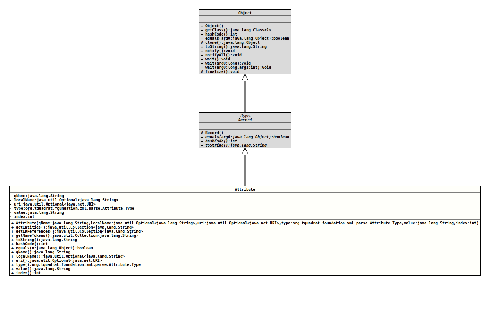

java.lang.Object
java.lang.Record
org.tquadrat.foundation.xml.parse.Attribute
- Record Components:
qName- The XML qualified (prefixed) name for the attribute.localName- An instance ofOptionalthat holds the local name for the attribute; will be empty if Namespace processing is not being performed.uri- An instanceOptionalthat holds the Namespace URI for the attribute; will be empty if none is available.type- The attribute type. If the parser has not read a declaration for the attribute, or if the parser does not report attribute types, then it must return the valueCDATAas stated in the XML 1.0 Recommendation (clause 3.3.3, "Attribute-Value Normalization"). For an enumerated attribute that is not a notation (NOTATION), the parser will report the type asNMTOKEN.value- The value of the attribute.index- The index of the attribute in the attributes list for the element.
@ClassVersion(sourceVersion="$Id: Attribute.java 1030 2022-04-06 13:42:02Z tquadrat $")
@API(status=STABLE,
since="0.1.0")
public record Attribute(String qName, Optional<String> localName, Optional<URI> uri, Attribute.Type type, String value, int index)
extends Record
An attribute.
- Author:
- Thomas Thrien (thomas.thrien@tquadrat.org)
- Version:
- $Id: Attribute.java 1030 2022-04-06 13:42:02Z tquadrat $
- Since:
- 0.1.0
- UML Diagram
-

UML Diagram for "org.tquadrat.foundation.xml.parse.Attribute"
{kind=link}
-
Nested Class Summary
Nested Classes -
Field Summary
FieldsModifier and TypeFieldDescriptionprivate final intThe field for theindexrecord component.The field for thelocalNamerecord component.private final StringThe field for theqNamerecord component.private final Attribute.TypeThe field for thetyperecord component.The field for theurirecord component.private final StringThe field for thevaluerecord component. -
Constructor Summary
Constructors -
Method Summary
Modifier and TypeMethodDescriptionfinal booleanIndicates whether some other object is "equal to" this one.If the attribute is of typeAttribute.Type.ENTITYorAttribute.Type.ENTITIES, this method will return a list of the entity values.If the attribute is of typeAttribute.Type.IDREForAttribute.Type.IDREFS, this method will return a list of the ID references.If the attribute is of typeAttribute.Type.NMTOKENorAttribute.Type.NMTOKENS, this method will return a list of the name tokens.final inthashCode()Returns a hash code value for this object.intindex()Returns the value of theindexrecord component.Returns the value of thelocalNamerecord component.qName()Returns the value of theqNamerecord component.final StringtoString()Returns a string representation of this record class.type()Returns the value of thetyperecord component.uri()Returns the value of theurirecord component.value()Returns the value of thevaluerecord component.
-
Field Details
-
Constructor Details
-
Attribute
public Attribute(String qName, Optional<String> localName, Optional<URI> uri, Attribute.Type type, String value, int index) Creates an instance of aAttributerecord class.- Parameters:
qName- the value for theqNamerecord componentlocalName- the value for thelocalNamerecord componenturi- the value for theurirecord componenttype- the value for thetyperecord componentvalue- the value for thevaluerecord componentindex- the value for theindexrecord component
-
-
Method Details
-
getEntities
If the attribute is of typeAttribute.Type.ENTITYorAttribute.Type.ENTITIES, this method will return a list of the entity values.- Returns:
- The entity values; the return value is empty, if the attribute
is not of type
Attribute.Type.ENTITYorAttribute.Type.ENTITIES.
-
getIDReferences
If the attribute is of typeAttribute.Type.IDREForAttribute.Type.IDREFS, this method will return a list of the ID references.- Returns:
- The ID references; the return value is empty, if the attribute
is not of type
Attribute.Type.IDREForAttribute.Type.IDREFS.
-
getNameTokens
If the attribute is of typeAttribute.Type.NMTOKENorAttribute.Type.NMTOKENS, this method will return a list of the name tokens.- Returns:
- The name tokens; the return value is empty, if the attribute
is not of type
Attribute.Type.NMTOKENorAttribute.Type.NMTOKENS,
-
toString
Returns a string representation of this record class. The representation contains the name of the class, followed by the name and value of each of the record components. -
hashCode
Returns a hash code value for this object. The value is derived from the hash code of each of the record components. -
equals
Indicates whether some other object is "equal to" this one. The objects are equal if the other object is of the same class and if all the record components are equal. Reference components are compared withObjects::equals(Object,Object); primitive components are compared with '=='. -
qName
Returns the value of theqNamerecord component.- Returns:
- the value of the
qNamerecord component
-
localName
Returns the value of thelocalNamerecord component.- Returns:
- the value of the
localNamerecord component
-
uri
Returns the value of theurirecord component.- Returns:
- the value of the
urirecord component
-
type
Returns the value of thetyperecord component.- Returns:
- the value of the
typerecord component
-
value
Returns the value of thevaluerecord component.- Returns:
- the value of the
valuerecord component
-
index
Returns the value of theindexrecord component.- Returns:
- the value of the
indexrecord component
-